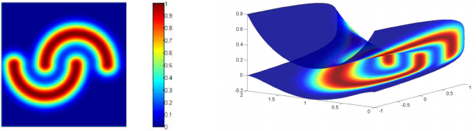
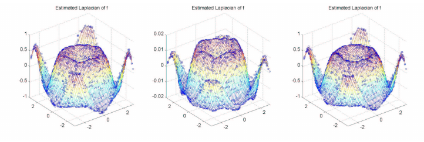
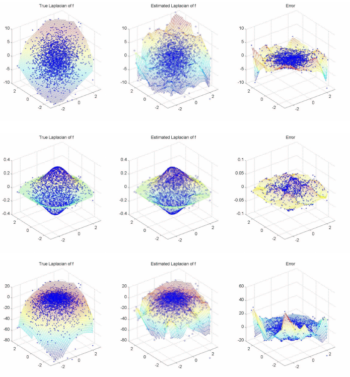
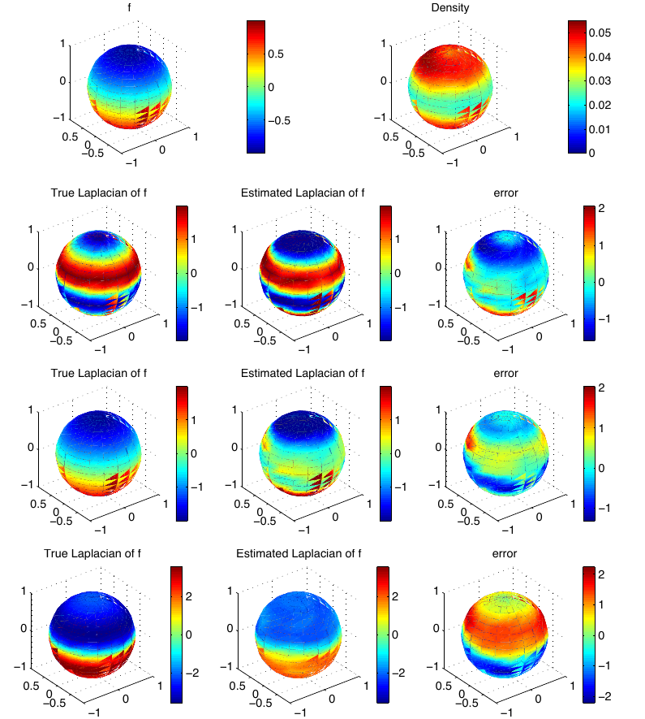
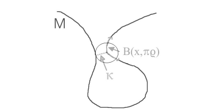

Paper: Hein, Matthias; Audibert, Jean-Yves; von Luxburg, Ulrike.
“Graph Laplacians and their Convergence on Random Neighborhood Graphs.”
Journal of Machine Learning Research 8:1325-1368, 2007. Reviewer:
Reviewer-P08 Auditor: Auditor-P08 Status: revised after audit Date:
2026-05-15 Source manifest ID: P08 Canonical reading copy:
literature/conductance_kernel_laplacian_review/sources/pdf/P08_hein_audibert_von_luxburg_graph_laplacian_convergence.pdf
A mathematically capable reader should be comfortable with:
P on a
manifold with density p relative to volume, and why a graph
built from random samples contains both geometry and density
information.The paper asks a deceptively simple question: if a graph is built from a random point cloud sampled on a manifold, what differential operator does the graph Laplacian approximate as the number of points grows and the neighborhood radius shrinks?
The answer depends on three choices that are easy to blur together:
The headline result is that when the sampling density is uniform, the
three Laplacians all approximate the same Laplace-Beltrami operator up
to constants. When the density is non-uniform, they do not. The
random-walk graph Laplacian has the cleanest continuum interpretation:
it converges to a weighted Laplace-Beltrami operator. The unnormalized
Laplacian converges to that same operator multiplied by an additional
density factor. The symmetric normalized Laplacian has a more
complicated limit involving both multiplication by powers of
p and applying the weighted Laplacian to a density-rescaled
function.
This matters for smoothing and eigenvectors. A graph Laplacian is not just “geometry.” It may smooth more strongly in high-density or low-density regions depending on the graph construction. The parameter \(\lambda\) lets the user tune or remove the density effect for the random-walk Laplacian, but the same normalization choice does not transfer identically to the other Laplacians.
The paper is motivated by graph Laplacians in semi-supervised learning, spectral clustering, and dimensionality reduction. The Introduction says graph Laplacians are used because they generate diffusion processes, their eigenvectors have geometric properties, and they induce adaptive regularization functionals (PDF pp. 1-2 / JMLR pp. 1325-1326). The paper focuses on random neighborhood graphs from iid samples on a submanifold of Euclidean space and studies the simultaneous limit \(n \to infinity\), \(h \to 0\) (Section 1, PDF pp. 2-3 / JMLR pp. 1326-1327).
Earlier work had treated deterministic grids, deterministic manifold graphs, fixed neighborhood limits, or only parts of the random graph convergence problem. Hein, Audibert, and von Luxburg position this paper as a unified pointwise convergence analysis for the three graph Laplacians most common in machine learning, under general submanifold and density assumptions (Section 1, PDF p. 3 / JMLR p. 1327).
The key conceptual target is the weighted Laplace-Beltrami operator,
not automatically the ordinary Laplace-Beltrami operator. The sampling
density p can enter the continuum limit unless the graph
weights are adjusted to remove it.
The paper proceeds in four layers:
d, with \(\Delta = d\, d\). This makes clear that a
named finite graph Laplacian does not by itself determine the underlying
discrete differential structure.M, using a compact-support kernel with bandwidth/radius
h and density-reweighted edge weights \(k_tilde_{\lambda,h}\).The paper is theoretical but includes numerical illustrations in Section 4 showing how the three Laplacian limits agree under uniform sampling and diverge under non-uniform sampling.
The directed graph setup begins with a positive similarity matrix
W and directed edges where \(w_{ij} > 0\). The outgoing and incoming
degree-like quantities are defined with a factor \(1/n\) (Section 2.1, PDF p. 4 / JMLR
p. 1328):
\[ \begin{aligned} d_{i}^out &= (1/n) sum_{j} w_{ij}, \\ d_{i}^in &= (1/n) sum_{j} w_{ji}. \end{aligned} \]
The general difference operator is Definition 1 (Section 2.2, PDF p. 4 / JMLR p. 1328):
\[ \begin{aligned} (d f)(e_{ij}) &= gamma(w_{ij}) [f(j) - f(i)]. \end{aligned} \]
The graph Laplacian is Definition 4 (Section 2.3, PDF p. 5 / JMLR p. 1329):
\[ \begin{aligned} \Delta &= d\, d. \end{aligned} \]
For undirected graphs, Definition 7 gives the corresponding explicit form (Section 2.4, PDF p. 6 / JMLR p. 1330):
\[ \begin{aligned} (\Delta f)(l) \\ &= [1 / chi(d_{l})] [ f(l) (1/n) sum_{i} gamma(w_{il})^2 phi(w_{il}) \\ - (1/n) sum_{i} f(i) gamma(w_{il})^2 phi(w_{il}) ]. \end{aligned} \]
The three machine-learning graph Laplacians are then named in Section 2.4 (PDF pp. 6-7 / JMLR pp. 1330-1331):
\[ \begin{aligned} Random-walk: \\ \Delta^(rw) f &= (I - D^{-1} W) f \\ (\Delta^(rw) f)(i) &= f(i) - (1/d_{i})(1/n) sum_{j} w_{ij} f(j) \\ Unnormalized/combinatorial: \\ \Delta^(u) f &= (D - W) f \\ (\Delta^(u) f)(i) &= d_{i} f(i) - (1/n) sum_{j} w_{ij} f(j) \\ Symmetric normalized: \\ \Delta^(n) f &= D^{-1/2} (D - W) D^{-1/2} f \\ &= (I - D^{-1/2} W D^{-1/2}) f \end{aligned} \]
The random neighborhood graph construction is Section 3.1 (PDF pp. 8-9 / JMLR pp. 1332-1333). The sample points are vertices, and the degree for the base kernel is
\[ \begin{aligned} d_{h,n}(X_{i}) &= (1/n) sum_{j} h^{-m} k( \Vert X_{i} - X_{j}\Vert ^2 / h^2 ). \end{aligned} \]
The density-reweighted kernel family is
\[ \begin{aligned} k_tilde_{\lambda,h}(X_{i}, X_{j}) \\ &= h^{-m} k( \Vert X_{i} - X_{j}\Vert ^2 / h^2 ) \\ / [d_{h,n}(X_{i}) d_{h,n}(X_{j})]^\lambda. \end{aligned} \]
The graph edge weight is
\[ \begin{aligned} w_{\lambda,h}(X_{i}, X_{j}) &= k_tilde_{\lambda,h}(X_{i}, X_{j}). \end{aligned} \]
The paper assumes a compactly supported kernel when proving the main non-compact manifold results, so an edge exists only when \(\Vert X_{i} - X_{j}\Vert \le h R_{k}\) (Section 3.1, PDF p. 8 / JMLR p. 1332). This is a radius/bandwidth graph, not a kNN graph.
The extended graph Laplacians on all x in M are equation
(3), Section 3.1 (PDF p. 9 / JMLR p. 1333):
\[ \begin{aligned} d_tilde_{\lambda,h,n}(x) &= (1/n) sum_{j} k_tilde_{\lambda,h}(x, X_{j}) \\ A_tilde_{\lambda,h,n} f(x) &= (1/n) sum_{j} k_tilde_{\lambda,h}(x, X_{j}) f(X_{j}) \\ \Delta^(rw)_{\lambda,h,n} f(x) \\ &= (1/h^2) [ f - d_tilde_{\lambda,h,n}^{-1} A_tilde_{\lambda,h,n} f ](x) \\ \Delta^(u)_{\lambda,h,n} f(x) \\ &= (1/h^2) [ d_tilde_{\lambda,h,n} f - A_tilde_{\lambda,h,n} f ](x) \\ \Delta^(n)_{\lambda,h,n} f(x) \\ &= (1/h^2) d_tilde_{\lambda,h,n}(x)^{-1/2} \\ [ d_tilde_{\lambda,h,n} f / \sqrt(d_tilde_{\lambda,h,n}) \\ - A_tilde_{\lambda,h,n}(f / \sqrt(d_tilde_{\lambda,h,n})) ](x). \end{aligned} \]
The factor \(1/h^2\) is explicit: the graph difference approximates a first derivative scaled by \(1/h\), so the Laplacian approximates a second derivative scaled by \(1/h^2\) (Section 3.1, PDF p. 9 / JMLR p. 1333).
The continuum weighted Laplacian is Definition 9 (Section 3.2, PDF p. 10 / JMLR p. 1334):
\[ \begin{aligned} \Delta_{s} &= \Delta_{M} + (s/p) <\nabla p, \nabla> \\ &= p^{-s} \operatorname{div}(p^s \nabla). \end{aligned} \]
Its associated integration-by-parts identity and smoothness functional appear in equation (4) and the following discussion (PDF pp. 10-11 / JMLR pp. 1334-1335):
\[ \begin{aligned} int_{M} f (\Delta_{s} g) p^s dV &= - int_{M} <\nabla f, \nabla g> p^s dV \\ S(f) &= int_{M} \Vert \nabla f\Vert ^2 p^s dV. \end{aligned} \]
The Main Result in Section 3.3 (PDF p. 12 / JMLR p. 1336) states, with \(s = 2(1 - \lambda)\) and constants depending only on the kernel and \(\lambda\):
\[ \begin{gathered} Random-walk: \\ \Delta^(rw)_{\lambda,h,n} f(x) \to - \Delta_{s} f(x) \\ \text{if} h \to 0 and n h^{m+2} / \log n \to infinity. \\ Unnormalized: \\ \Delta^(u)_{\lambda,h,n} f(x) \to - p(x)^{1-2 \lambda} \Delta_{s} f(x) \\ \text{if} h \to 0 and n h^{m+2} / \log n \to infinity. \\ Symmetric normalized: \\ \Delta^(n)_{\lambda,h,n} f(x) \\ \to - p(x)^{1/2-\lambda} \Delta_{s}( f / p^{1/2-\lambda} )(x) \\ \text{if} h \to 0 and n h^{m+4} / \log n \to infinity. \end{gathered} \]
The formal theorems add the constants. Theorem 30 (PDF pp. 32-33 / JMLR pp. 1356-1357) gives
\[ \begin{gathered} \Delta^(rw)_{\lambda,h,n} f(x) \to -(C2 / 2 C1) \Delta_{s} f(x), \\ \Delta^(u)_{\lambda,h,n} f(x) \\ \to -(C2 / 2 C1^(2 \lambda)) p(x)^{1-2 \lambda} \Delta_{s} f(x), \end{gathered} \]
with almost sure convergence when \(h \to 0\) and \(n h^{m+2} / \log n \to infinity\), and error
\[ \begin{gathered} O(h) + O( \sqrt(\log n / (n h^{m+2})) ). \end{gathered} \]
Theorem 31 (PDF p. 33 / JMLR p. 1357) gives the normalized-Laplacian statement with the stronger condition \(n h^{m+4} / \log n \to infinity\).
The paper has no experimental table. It has four substantive method/result figures plus one geometric proof figure.
Figure 1 (Section 3.2, PDF p. 11 / JMLR p. 1335) shows a density profile mapped onto a two-dimensional submanifold in \(\mathbb{R}^{3}\) with two clusters. It illustrates the idea behind the weighted smoothness functional: for \(s > 0\), changes in high-density regions are penalized more than changes in low-density regions.

Figure 2 (Section 4.1, PDF p. 14 / JMLR p. 1338) shows the three graph Laplacian estimates on a uniform distribution over \([-3,3]^2\), with \(n = 2500\), \(h = 1.4\), \(\lambda = 0\), and \(f(x) = \sin(\Vert x\Vert ^2 / 2) / \Vert x\Vert ^2\). The point is that under uniform sampling all three graph Laplacians agree up to scaling.

Figure 3 (Section 4.1, PDF p. 15 / JMLR p. 1339) shows random-walk, unnormalized, and normalized Laplacian estimates for samples from a standard Gaussian distribution on \(\mathbb{R}^{2}\), with \(n = 2500\), \(h = 1.2\), \(\lambda = 0\), and \(f(x) = sum_{i} x_{i} - 4\). This is the clearest visual demonstration that non-uniform density makes the three Laplacian limits disagree.

Figure 4 (Section 4.2, PDF p. 17 / JMLR p. 1341) studies the random-walk Laplacian on the sphere \(S^2\) with non-uniform density \(p(phi, \theta) = 1/(8 \pi) + 3 \cos^2(\theta)/(8 \pi)\) and \(f(phi, \theta) = \cos(\theta)\), using \(n = 2500\), \(h = 0.6\). Rows compare three \(\lambda\) values and show how changing \(\lambda\) changes the density bias and therefore the induced smoothing/diffusion behavior. There is a small sign/order ambiguity in the paper’s prose and caption: Section 3.3 and Theorems 25/30 define \(s = 2(1-\lambda)\), which maps \(\lambda = 0, 1, 2\) to \(s = 2, 0, -2\), but the Section 4.2 text and Figure 4 caption state \(\lambda = 0, 1, 2\) gives \(s = -2, 0, 2\) (PDF pp. 16-17 / JMLR pp. 1340-1341). This memo treats the theorem formula as authoritative and flags the figure ordering as uncertain.

Figure 5 (Section 5.1.2, PDF p. 21 / JMLR p. 1345) is a proof aid
showing the Euclidean separation parameter kappa, used to
ensure local Euclidean neighborhoods do not accidentally connect
intrinsically distant parts of a non-compact or self-approaching
manifold.

The numerical examples are illustrative, not benchmark experiments. Their role is to make visible the theorem’s consequences: uniform density collapses the differences among Laplacians; non-uniform density and normalization choices lead to different continuum operators.
The main convergence claim is pointwise, not global spectral
convergence. For a fixed interior point x in M \ partial M
and smooth f, the extended graph Laplacian applied to
f converges almost surely to the appropriate continuum
operator under bandwidth/sample-size conditions (Main Result, Section
3.3, PDF p. 12 / JMLR p. 1336; Theorems 30-31, PDF pp. 32-33 / JMLR
pp. 1356-1357).
The bias term is controlled by Theorem 25 and Corollary 27 (PDF pp. 27-29 / JMLR pp. 1351-1353). Theorem 25 shows the continuum random-walk kernel approximation converges to \(-(C2 / 2 C1) \Delta_{s} f + O(h)\). Corollary 27 extends this to unnormalized and normalized continuum operators.
The variance term is controlled by concentration estimates for local kernel sums. Theorem 28 handles the simpler \(\lambda = 0\) case (PDF p. 29 / JMLR p. 1353). Proposition 29 gives the empirical-to-continuum deviation for the density-reweighted averages (PDF pp. 30-31 / JMLR pp. 1354-1355). Theorem 30 combines bias and variance for random-walk and unnormalized Laplacians; Theorem 31 handles the normalized Laplacian.
The assumptions are strong but explicit. Assumption 19 requires an embedded submanifold of bounded geometry with control of intrinsic/extrinsic distances and no self-approaching pathology (PDF pp. 22-23 / JMLR pp. 1346-1347). Assumption 20 requires a nonnegative non-increasing kernel with smoothness/decay conditions and \(k(0)=0\); the compact-support condition is imposed in the main non-compact proofs (PDF pp. 23-24 / JMLR pp. 1347-1348; Theorem 25, PDF p. 27 / JMLR p. 1351). Assumption 21 requires iid sampling from a probability measure with positive \(C^3\) density in the interior (PDF p. 24 / JMLR p. 1348).
The paper explicitly warns about boundary effects. Section 4.1 says
estimates are bad at the boundary because a local averaging ball is
truncated, causing a first-derivative term of order O(h) to
survive and then blow up after multiplication by \(1/h^2\) (PDF p. 14 / JMLR p. 1338). Section
5.4.1 says boundary conditions are unnecessary for pointwise interior
convergence but remain an open problem for uniform convergence from
random samples (PDF p. 27 / JMLR p. 1351).
The convergence is pointwise at interior points. The paper does not prove uniform convergence over all points, convergence of eigenvalues/eigenvectors in the shrinking-bandwidth setting, or spectral clustering consistency in this regime.
The graph is a random radius/bandwidth neighborhood graph, not a kNN
graph. The proof relies on a kernel bandwidth h; compact
support makes the graph sparse and local. A Gaussian kernel is discussed
as possible for compact manifolds, but the main non-compact theory uses
compact support (Remark 26, PDF p. 28 / JMLR p. 1352).
The unnormalized graph Laplacian requires knowledge of the intrinsic
dimension m to use the correct \(h^{-m}\) scaling. Section 3.1 says
otherwise the estimate may vanish or blow up as \(h \to 0\), and simultaneous dimension
estimation is left as an open problem (PDF p. 9 / JMLR p. 1333).
The density correction uses the empirical degree function. This is related to adaptive density normalization in diffusion maps, but it is not a local bandwidth/length-scale graph where the distance denominator itself changes pointwise.
The normalized Laplacian limit is harder to interpret. Section 3.3 expands it and explicitly leaves possible applications to the reader (PDF p. 13 / JMLR p. 1337).
The sign convention is easy to misread. Graph Laplacians here are positive semidefinite, while the paper uses the differential-geometric convention in which the Laplace-Beltrami operator is negative semidefinite. Therefore graph limits contain a minus sign (Theorem 25 note, PDF p. 28 / JMLR p. 1352).
This is a central bridge paper between manifold-learning intuition and rigorous graph Laplacian asymptotics. Its main practical message is that “graph Laplacian approximates Laplace-Beltrami” is only safe under uniform sampling or under a normalization that removes density effects. In realistic non-uniform data, normalization controls the continuum operator.
For later diffusion-map and graph signal processing work, the paper clarifies why degree normalization is not a cosmetic finite-sample choice. It changes drift, smoothing weights, and spectral behavior. The paper is also important because it separates random-walk, unnormalized, and symmetric normalized Laplacians in the same theoretical framework.
\(explicit\): Base radius kernel (Section 3.1, PDF p. 8 / JMLR p. 1332):
\[ \begin{aligned} k_{h}(\Vert x-y\Vert ^2) &= h^{-m} k(\Vert x-y\Vert ^2 / h^2). \end{aligned} \]
\(explicit\): Empirical degree for the base kernel (Section 3.1, PDF p. 8 / JMLR p. 1332):
\[ \begin{aligned} d_{h,n}(X_{i}) &= (1/n) sum_{j} h^{-m} k(\Vert X_{i} - X_{j}\Vert ^2 / h^2). \end{aligned} \]
\(explicit\): Density-reweighted kernel/edge weight (Section 3.1, PDF p. 8 / JMLR p. 1332):
\[ \begin{aligned} k_tilde_{\lambda,h}(X_{i}, X_{j}) \\ &= h^{-m} k(\Vert X_{i}-X_{j}\Vert ^2 / h^2) \\ / [d_{h,n}(X_{i}) d_{h,n}(X_{j})]^\lambda. \\ w_{\lambda,h}(X_{i}, X_{j}) &= k_tilde_{\lambda,h}(X_{i}, X_{j}). \end{aligned} \]
\(explicit\): Compact-support radius
rule (Section 3.1, PDF p. 8 / JMLR p. 1332): if k has
support radius \(R_{k}\), then points
have an edge only when \(\Vert
X_{i}-X_{j}\Vert \le h R_{k}\).
derived: The density-reweighted kernel is a
conductance/affinity in the sense relevant to SIMODS: it is the positive
edge weight that controls graph smoothing. Larger \(\lambda\) divides by more of the local
degree/density estimate, reducing the influence of dense regions in the
random-walk limit.
contextual: The paper’s \(\lambda\) correction is a density
normalization, not a variable-length or local-bandwidth kernel. It
changes weights by powers of degree estimates while the distance scale
remains the global h.
\(explicit\): Graph types include a general directed weighted graph in Section 2.1 and an undirected weighted graph in Section 2.4. The random neighborhood graphs in Section 3.1 are undirected weighted graphs because the kernel and degree correction are symmetric in \(X_{i}, X_{j}\).
\(explicit\): The paper studies three graph Laplacians:
\(explicit\): The continuum target family is the weighted Laplacian
\[ \begin{aligned} \Delta_{s} &= p^{-s} \operatorname{div}(p^s \nabla) \\ &= \Delta_{M} + (s/p) <\nabla p, \nabla>, \end{aligned} \]
with \(s = 2(1-\lambda)\) (Definition 9, PDF p. 10 / JMLR p. 1334; Main Result, PDF p. 12 / JMLR p. 1336).
\(explicit\): Random-walk Laplacian has the clean limit to the weighted Laplace-Beltrami operator. Unnormalized and normalized Laplacians carry extra density transformations (Main Result, Section 3.3, PDF p. 12 / JMLR p. 1336).
\(explicit\): The paper names semi-supervised learning, spectral clustering, and dimensionality reduction as motivating graph Laplacian applications (Abstract, PDF p. 1 / JMLR p. 1325; Introduction, PDF pp. 1-2 / JMLR pp. 1325-1326).
\(explicit\): Section 3.2 also discusses regression and computer graphics/point-cloud processing as settings where different density effects may or may not be desired (PDF pp. 11-13 / JMLR pp. 1335-1337).
derived: For conductance/kernel smoothing, the relevant
task is graph-based regularization or diffusion smoothing on sampled
data: the graph Laplacian determines which differences in a function
over the vertices are penalized and how a signal diffuses over the
graph.
\(explicit\): The Introduction says Laplacians are important because they generate diffusion processes, have eigenvectors with geometric properties, and induce adaptive regularization functionals (PDF pp. 1-2 / JMLR pp. 1325-1326).
\(explicit\): Section 3.2 says label propagation in semi-supervised learning wants diffusion along high-density regions (PDF p. 11 / JMLR p. 1335).
\(explicit\): Section 3.2 says the smoothness functional \(\int \Vert \nabla f\Vert ^2 p^s dV\) prefers smoothness in high-density regions when \(s > 0\) and allows more variation in low-density regions (PDF p. 11 / JMLR p. 1335).
\(explicit\): Section 3.3 says density effects can be eliminated for the random-walk Laplacian by choosing \(s = 0\), equivalently \(\lambda = 1\), and notes this may be useful in point-cloud/mesh processing when sampling density is an artifact (PDF p. 13 / JMLR p. 1337).
\(explicit\): Section 3.3 says there is no universal best choice between random-walk and unnormalized Laplacians from a machine-learning viewpoint, but mathematically only the random-walk graph Laplacian has the correct pointwise limit to the weighted Laplace-Beltrami operator (PDF p. 13 / JMLR p. 1337).
derived: If the analyst wants a purely geometric
smoother, the random-walk Laplacian with \(\lambda = 1\) is the clean choice in this
paper’s framework because \(s = 0\)
removes the \(\nabla p\) drift term
from \(\Delta_{s}\).
derived: If the analyst wants density-aware label
propagation, smaller \(\lambda\) values
retain positive s and therefore weight the smoothness
functional by powers of density. This supports the cluster assumption by
making sharp changes cheaper in low-density regions.
derived: The unnormalized Laplacian can be useful for
label propagation because its extra factor \(p^{1-2 \lambda}\) makes diffusion speed
depend on density; the paper explicitly describes faster diffusion in
high-density regions for \(\lambda <
1/2\) (Section 3.3, PDF p. 12 / JMLR p. 1336).
contextual: For graph signal smoothing, the paper
implies that changing from unnormalized to normalized Laplacian changes
not only numerical conditioning but also the continuum smoothing
prior.
\(explicit\): The weighted Laplacian generates anisotropic diffusion through the drift term \((s/p) <\nabla p, \nabla f>\) (Section 3.2 and Section 3.3, PDF pp. 11-12 / JMLR pp. 1335-1336).
\(explicit\): The smoothness functional is
\[ \begin{aligned} S(f) &= int_{M} \Vert \nabla f\Vert ^2 p^s dV. \end{aligned} \]
For \(s > 0\), the paper states this prefers smooth functions in high-density regions and penalizes unsmooth behavior less in low-density regions (Section 3.2, PDF p. 11 / JMLR p. 1335).
\(explicit\): The paper connects eigenfunctions to spectral clustering. Under a compact no-boundary thought experiment, the first nonzero eigenfunction is described through the Rayleigh-Ritz principle:
\[ \begin{aligned} lambda_{1} &= inf \int \Vert \nabla u\Vert ^2 p^s dV, \end{aligned} \]
subject to normalization and orthogonality to constants. For \(s > 0\), the first nonzero eigenfunction is likely to change sign in a low-density region because gradient cost is lower there (Section 3.2, PDF pp. 11-12 / JMLR pp. 1335-1336).
\(explicit\): Figure 4 (PDF p. 17 / JMLR p. 1341) shows that changing \(\lambda\) changes the random-walk Laplacian’s behavior on a sphere with non-uniform density. The paper explains that for \(s = 2\) the diffusion tends toward a step-like function changing near the equator, while for \(s = -2\) the behavior flips and smoothing is emphasized in the low-density region (Section 4.2, PDF pp. 16-17 / JMLR pp. 1340-1341).
uncertain: Section 3.2 appears to contain a sign typo in
the prose describing diffusion direction: it says “If \(s < 0\)” for both directions.
Separately, Section 4.2 and the Figure 4 caption list \(\lambda = 0,1,2\) as resulting in \(s = -2,0,2\), which reverses the theorem
formula \(s = 2(1-\lambda)\). The memo
therefore treats the displayed operator formula, Main Result, and
Theorems 25/30/31 as authoritative, while flagging the explanatory
prose/caption as uncertain.
\(explicit\): The paper uses data-dependent edge weights through powers of empirical degrees, following Lafon and Coifman-Lafon (Section 3.1, PDF p. 8 / JMLR p. 1332). The tuning parameter is \(\lambda\).
\(explicit\): The neighborhood
radius/bandwidth itself is the global scalar h; convergence
requires \(h \to 0\) while enough
points remain in each local neighborhood. For random-walk and
unnormalized Laplacians, \(n h^{m+2} / \log n
\to infinity\); for normalized, \(n
h^{m+4} / \log n \to infinity\) (Main Result, PDF p. 12 / JMLR
p. 1336).
\(explicit\): There is no kNN graph
in this paper. No theorem assumes k nearest neighbors or
local scales based on neighbor distances.
derived: The construction is adaptive to sampling
density in the edge amplitude, not adaptive in distance scale. This
should be kept separate from later planned length/kernel-conductance
comparators where the metric length scale or conductance kernel may vary
locally.
contextual: The paper is still highly relevant to
adaptive-scale graph construction because it shows that density
normalization changes the limiting operator. Any future local bandwidth
or conductance comparator should specify whether it targets \(\Delta_{M}\), \(\Delta_{s}\), or a different diffusion
operator.
\(explicit\): It does not prove
spectral convergence for shrinking h. The Introduction
distinguishes this paper from von Luxburg et al. (2007), which studies
fixed h and spectral convergence to integral operators (PDF
p. 2 / JMLR p. 1326).
\(explicit\): It does not resolve boundary-condition transfer from continuum manifolds to random graphs. Section 5.4.1 calls this an open problem (PDF p. 27 / JMLR p. 1351).
\(explicit\): It does not solve the problem of unknown intrinsic dimension for the unnormalized Laplacian scaling. Section 3.1 leaves simultaneous dimension estimation and Laplacian estimation as an open problem (PDF p. 9 / JMLR p. 1333).
\(explicit\): It does not claim a universal best graph Laplacian for all machine-learning problems. Section 3.3 says the choice depends on the problem (PDF p. 13 / JMLR p. 1337).
\(explicit\): It does not provide a kNN convergence theory or a self-tuned local bandwidth theory.
derived: It does not justify replacing all density-aware
smoothers with geometry-only Laplace-Beltrami smoothing. The paper’s own
examples show density-aware smoothing can be desirable in
semi-supervised learning.
contextual: The paper supports a careful separation
between graph construction, graph normalization, and smoothing target. A
current gflow overlap-density smoother should not be described as
equivalent to a planned length/kernel-conductance smoother merely
because both use graph Laplacians or graph weights.
derived: If current
fit.rdgraph.regression() semantics are based on
overlap-density conductance, the operator likely encodes density and
graph-degree effects directly through the present edge weights. That
should be reported as the current behavior, not retroactively
interpreted as a variable-bandwidth or density-corrected
Laplace-Beltrami estimator.
derived: Planned length/kernel-conductance comparators
should declare their continuum intent:
derived: The paper gives a warning for any SIMODS
eigenfunction or low-pass smoothing interpretation: changing the
Laplacian normalization may move the limiting sign-change
surfaces/eigenfunctions toward low-density regions or modify them by
density factors. That is a feature if the cluster assumption is desired
and a bug if the goal is density-invariant geometry.
contextual: The paper’s \(\lambda\) reweighting is a density
normalization of kernel amplitudes. It should be compared to planned
length/kernel-conductance variants as one comparator family, not folded
into the current overlap-density smoother.
Reproduced cropped figure panels for Figures 1–5 are managed by
paper_figure_screenshots.yml and embedded in the generated
HTML memo next to the primary figure descriptions. These are
internal-review cropped figure panels from the canonical reading copy,
not manuscript-ready reused figures.
The memo references the paper’s figures directly:
s on the sphere for
random-walk Laplacian.kappa.No original explanatory figures were created. A possible future audit figure would map \(\lambda \to s = 2(1-\lambda)\) and show the three limiting operators side by side, but the current memo keeps the review text-only to avoid introducing another artifact before audit.
| Claim | Label | Source reference | Notes |
|---|---|---|---|
| The paper studies graph Laplacians for semi-supervised learning, spectral clustering, and dimensionality reduction. | explicit | Abstract and Section 1, PDF pp. 1-2 / JMLR pp. 1325-1326 | Also repeated in Section 3.2 application discussion. |
The graph is built from iid samples on a submanifold using a kernel
bandwidth/radius h. |
explicit | Section 3.1, PDF pp. 8-9 / JMLR pp. 1332-1333 | Vertices are sample points; edge weights are \(k_tilde_{\lambda,h}\). |
| The studied graph is a radius/bandwidth graph, not a kNN graph. | explicit | Section 3.1, PDF p. 8 / JMLR p. 1332 | Edges exist when \(\Vert X_{i}-X_{j}\Vert \le h R_{k}\) under compact support. No nearest-neighbor construction is used. |
| The density-reweighted edge weight divides the base kernel by empirical degrees to power \(\lambda\). | explicit | Section 3.1, PDF p. 8 / JMLR p. 1332 | Formula for \(k_tilde_{\lambda,h}\). |
| The three Laplacians are random-walk, unnormalized, and symmetric normalized. | explicit | Section 2.4, PDF pp. 6-7 / JMLR pp. 1330-1331 | Includes matrix formulas \(I-D^{-1}W\), \(D-W\), and \(I-D^{-1/2}WD^{-1/2}\). |
| The continuum target is the weighted Laplacian \(\Delta_{s} = p^{-s} \operatorname{div}(p^s \nabla)\). | explicit | Definition 9, PDF p. 10 / JMLR p. 1334 | Also written as \(\Delta_{M} + (s/p)<\nabla p,\nabla>\). |
| \(s = 2(1-\lambda)\). | explicit | Main Result, PDF p. 12 / JMLR p. 1336; Theorem 30, PDF p. 32 / JMLR p. 1356 | Controls density effect. |
| Random-walk graph Laplacian converges to the weighted Laplace-Beltrami operator up to constants. | explicit | Main Result, PDF p. 12 / JMLR p. 1336; Theorem 30, PDF pp. 32-33 / JMLR pp. 1356-1357 | Limit includes minus sign from sign convention. |
| Unnormalized Laplacian has an extra factor \(p^{1-2 \lambda}\) in the limit. | explicit | Main Result, PDF p. 12 / JMLR p. 1336; Theorem 30, PDF p. 32 / JMLR p. 1356 | This can change diffusion speed by density. |
| Symmetric normalized Laplacian has a density-rescaled function in the limit. | explicit | Main Result, PDF p. 12 / JMLR p. 1336; Theorem 31, PDF p. 33 / JMLR p. 1357 | Limit is \(p^{1/2-\lambda} \Delta_{s}(f / p^{1/2-\lambda})\) up to constants and sign. |
| Under uniform density, all three Laplacians agree up to constants. | explicit | Abstract, PDF p. 1 / JMLR p. 1325; Section 3.3, PDF p. 12 / JMLR p. 1336; Figure 2, PDF p. 14 / JMLR p. 1338 | Only true when p is constant. |
| Under non-uniform density, all three limits differ. | explicit | Section 3.3, PDF pp. 12-13 / JMLR pp. 1336-1337; Figure 3, PDF p. 15 / JMLR p. 1339 | The paper calls non-uniform measures generic in ML. |
| Density effect can be removed for random-walk by \(\lambda = 1\). | explicit | Section 3.3, PDF p. 13 / JMLR p. 1337 | Since \(s=0\), the target is ordinary Laplace-Beltrami. |
| For random-walk and unnormalized Laplacians, almost sure convergence requires \(h \to 0\) and \(n h^{m+2}/\log n \to infinity\). | explicit | Main Result, PDF p. 12 / JMLR p. 1336; Theorem 30, PDF p. 32 / JMLR p. 1356 | Optimal rate \(h = O((\log n/n)^{1/(m+4)})\). |
| For normalized Laplacian, the convergence condition is stronger: \(n h^{m+4}/\log n \to infinity\). | explicit | Main Result, PDF p. 12 / JMLR p. 1336; Theorem 31, PDF p. 33 / JMLR p. 1357 | Due to applying the Laplacian to a degree-dependent function. |
| Boundary behavior is problematic for local averaging estimates. | explicit | Section 4.1, PDF p. 14 / JMLR p. 1338; Section 5.4.1, PDF p. 27 / JMLR p. 1351 | Pointwise results avoid boundary points. |
| The graph smoothness functional is \(\int \Vert \nabla f\Vert ^2 p^s dV\). | explicit | Section 3.2, PDF p. 11 / JMLR p. 1335 | Derived from equation (4). |
| For \(s > 0\), smoothness is enforced more in high-density regions and less in low-density regions. | explicit | Section 3.2, PDF p. 11 / JMLR p. 1335 | Important for cluster assumption and semi-supervised learning. |
| Eigenfunctions for \(s > 0\) tend to change sign in low-density regions. | explicit | Section 3.2, PDF pp. 11-12 / JMLR pp. 1335-1336 | Rayleigh-Ritz argument. |
Section 4.2/Figure 4 contains an apparent \(\lambda\)-to-s ordering
inconsistency. |
uncertain | Section 4.2 and Figure 4 caption, PDF pp. 16-17 / JMLR pp. 1340-1341 | The theorem formula maps \(\lambda=0,1,2\) to \(s=2,0,-2\); the caption/prose states \(s=-2,0,2\). |
| The paper’s density correction is not the same as variable local bandwidth. | derived | Section 3.1, PDF p. 8 / JMLR p. 1332 | Distance denominator uses global h; degree correction
changes amplitudes. |
| Current gflow overlap-density smoothing should be kept distinct from planned length/kernel-conductance comparators. | contextual | Inference from P08 operators and SIMODS review scope | P08 supports explicit separation of graph construction, normalization, and continuum target. |
fit.rdgraph.regression() use a
random-walk, unnormalized, normalized, or custom Laplacian form? The
implications differ materially under P08.Auditor-P08 resolved the gflow mapping question: current
fit.rdgraph.regression() is a custom mass-symmetrized
spectral smoother using overlap-density/Riemannian-complex conductance.
It is not directly one of P08’s random-walk, unnormalized, or
symmetric-normalized graph Laplacians.
Keep the \(\lambda/s\) issue flagged. The theorem formula \(s=2(1-\lambda)\) should be treated as authoritative; Section 4.2/Figure 4 appear to reverse the ordering.
Add kernel-assumption nuance for synthesis: \(k(0)=0\) removes self-loops, and compact support is added for the paper’s main non-compact consistency theorems.
2026-05-15: Drafted detailed P08 review memo from the canonical 44-page JMLR PDF. No repository figures were created or copied.